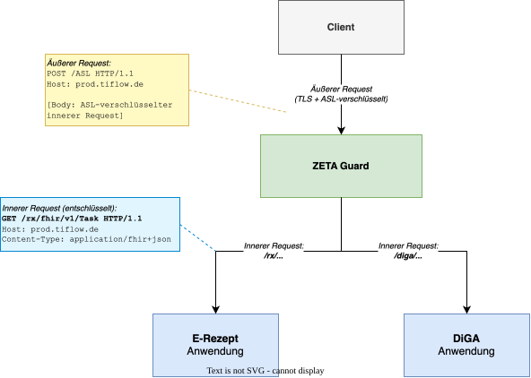
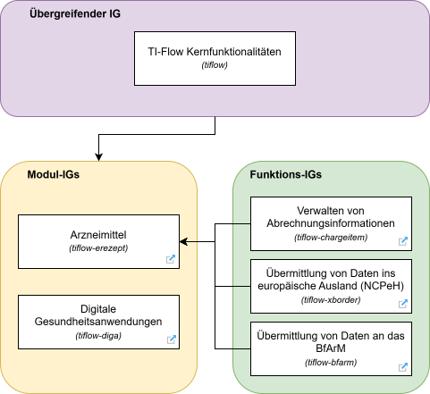
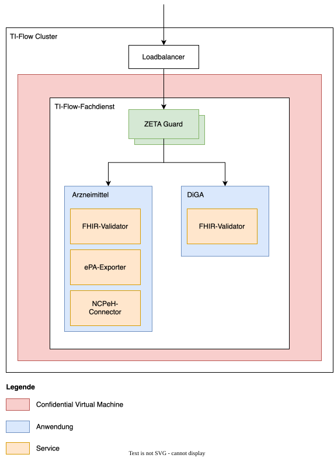
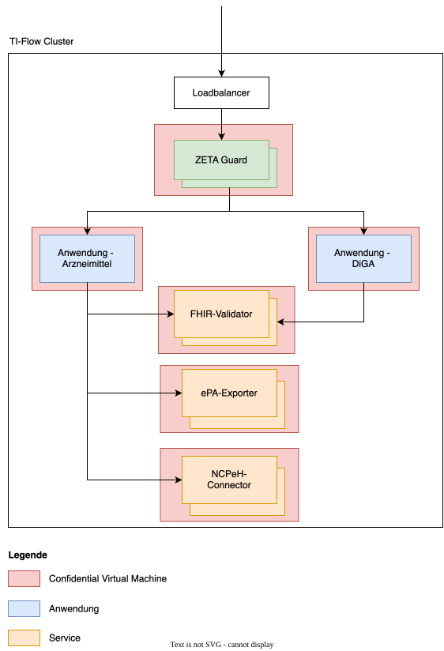
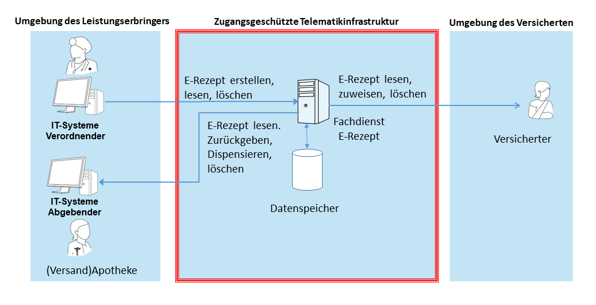
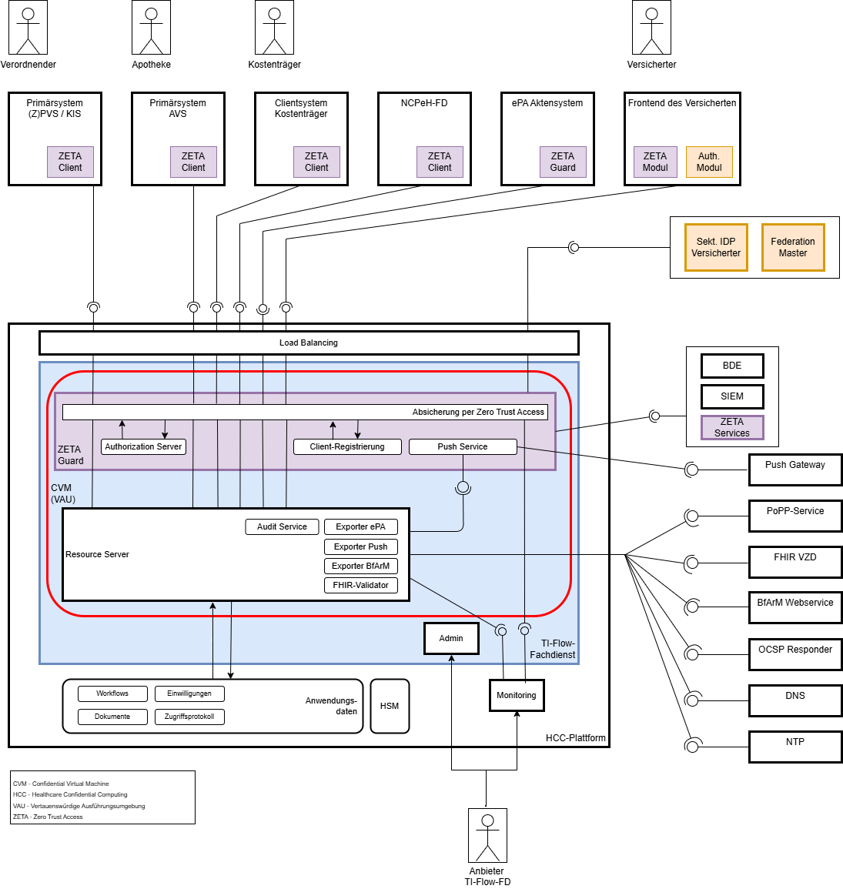
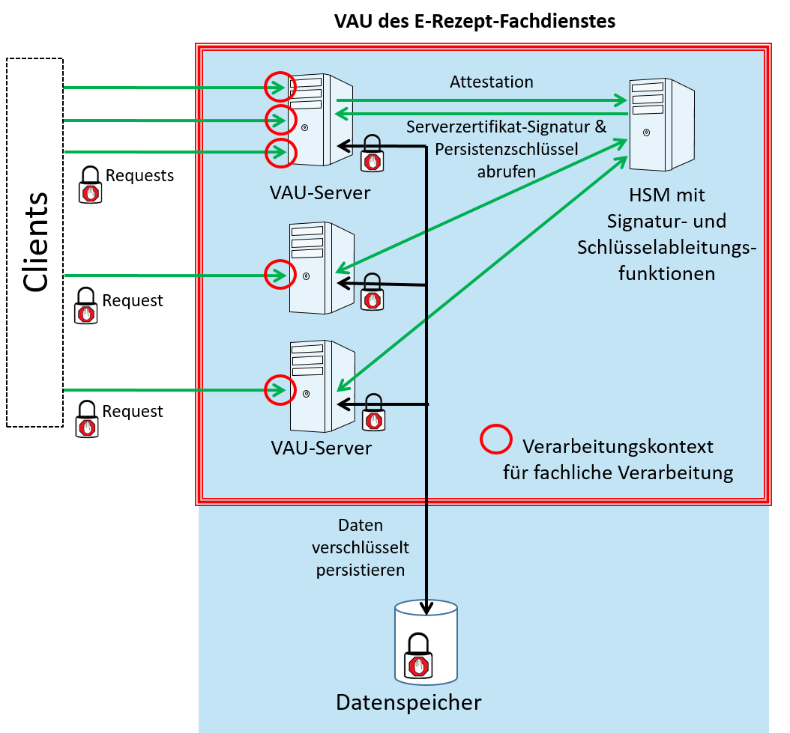

This fragment is not visible to the reader
This publication includes IP covered under the following statements.
|
address-tif-application.svg  |
|
ig-landscape.svg  |
|
inner-architecture-monolith.svg  |
|
inner-architecture-services.svg  |
|
systemkontext.png  |
|
systemueberblick_TI-Flow-Fachdienst.drawio.png  |
|
tree-filter.png
|
|
vau-erp-fd.png  |